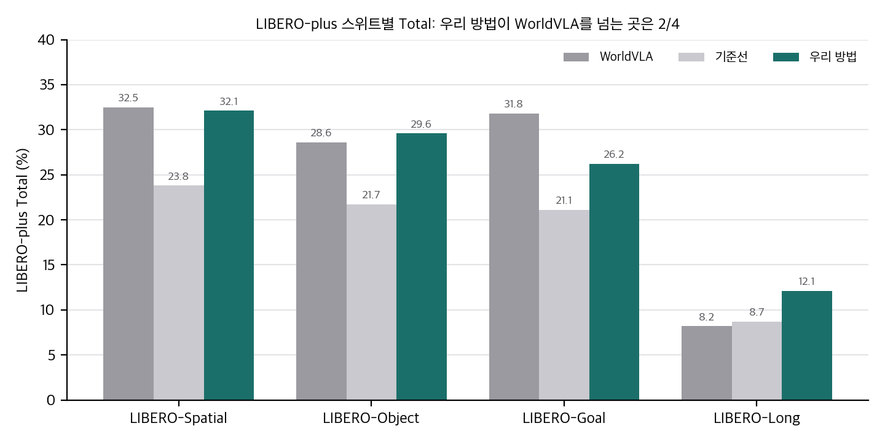
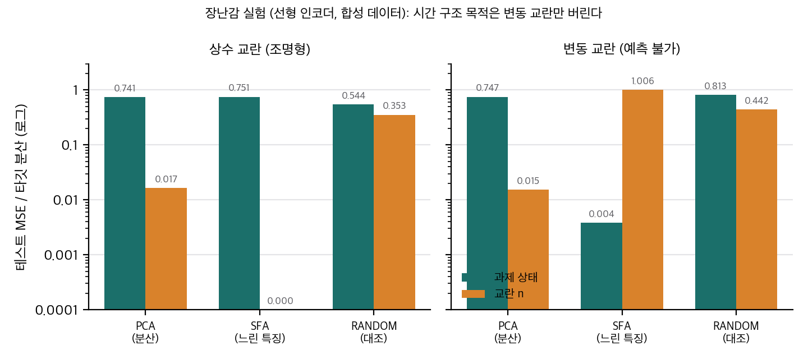
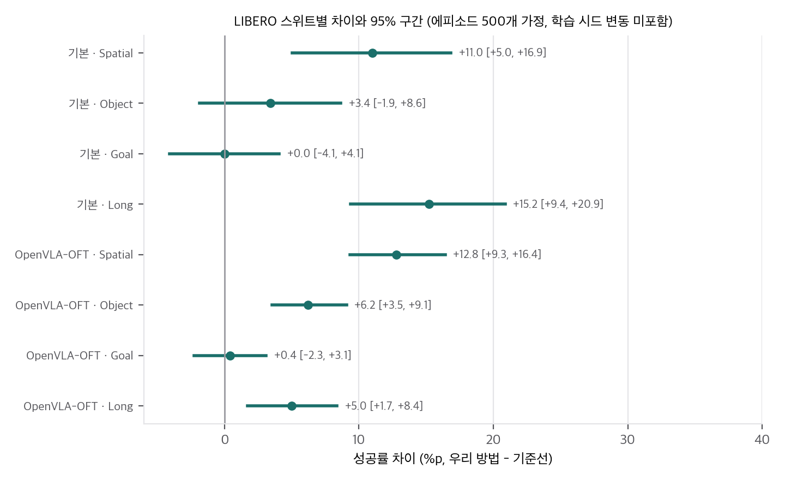

paper/arxiv_abs.html 제출 이력).http://arxiv.org/licenses/nonexclusive-distrib/1.0/). CC 라이선스가 아닙니다. 논문 그림은 개인 리포트·PPT에만 쓰고, 게시본에서는 뺍니다.README.md 참조).본문 인용은 paper/paper_plain.txt(일반 추출본)와 페이지 이미지를 기준으로 합니다. 절, 표, 그림 번호를 씁니다.
VLA는 사전학습된 VLM에 행동 헤드를 붙여 만들며, 샘플 효율과 일반화가 낮다고 저자들은 지적합니다. 원인을 사전학습된 시각 표현에서 찾습니다. 이 표현이 두 가지 지식을 부족하게 준다고 주장합니다.
DINO 계열(이미지 자기지도), SigLIP 계열(언어-이미지 대조)은 두 지식이 모두 부족하다고 봅니다. 반면 비디오로 사전학습한 예측 임베딩인 V-JEPA 2는 이 두 가지를 잘 담는다고 주장합니다. 이를 바탕으로 V-JEPA 2 표현을 기존 VLA에 붙이는 JEPA-VLA를 제안합니다. LIBERO, LIBERO-plus, RoboTwin 2.0, 실로봇(Piper 팔, 픽앤플레이스 한 과제)에서 향상을 보고합니다.
이 설정은 깔끔하지만, 두 지식을 정의하는 방식에 따라 결론이 달라집니다. 이 점은 04_claim_verification.md에서 다룹니다.
Fig. 2c는 V-JEPA 2의 오차를 1.0으로 두고 나머지를 상대값으로 그렸습니다. 절대 MSE, 오차 막대, 시드 수는 없습니다. 값은 그림을 눈으로 읽은 근사치입니다.
| 목표 | DINOv2 (근사) | SigLIP (근사) | V-JEPA 2 | 저자 해석 |
|---|---|---|---|---|
| 과제 상태 회귀 (좌, 10과제 평균 막대) | 약 1.43 | 약 1.24 | 1.0 | Finding 1: V-JEPA 2가 더 정밀 |
| 10 스텝 상태 변화 예측 (가운데, 평균 막대) | 약 1.22 (과제별 약 1.06–1.56) | 약 1.10 | 1.0 | Finding 3: 정책 사전지식 |
| 조명 회귀 (우) | 약 0.91 | 약 0.93 | 1.0 | Finding 2: 무관 요인 정보가 적음 |
| 배경 회귀 (우) | 약 0.74 | 약 0.98 | 1.0 | Finding 2 |
03_analysis.md §3)에서 시간 구조 목적은 상수 교란을 버리지 않고, 변동 교란만 버렸습니다.행동 모델 π_θ는 언어 l, 여러 카메라의 관측 o_t^{0:N}, 고유수용 상태 s_t를 받습니다(식 1). 여기에 고정된 V-JEPA 2 인코더 E_φ가 비디오 클립 o_{t-h:t}에서 h_t ∈ R^{N×C}를 만듭니다(식 2). 최종 식은 a_t ∼ π_θ(a_t | l, o^{0:N}_{1:t}, s_t, h_t)입니다(식 3).
| 표 | 비교 | 값 | 판단 |
|---|---|---|---|
| Table 1 | LIBERO 기본 VLA (1/10 데이터) 평균 | 61.65 → 69.05 (+7.40) | 평균 재계산 일치 |
| Table 1 | Long 스위트 | 25.8 → 41.0 (+15.2) | 가장 큰 차이 |
| Table 1 | Goal 스위트 | 87.8 → 87.8 (0.0) | 차이 없음 |
| Table 2 | LIBERO-plus 기본 VLA Total | 18.9 → 25.6 (+6.7), WorldVLA 25.0 | 집계 방식에 따라 WorldVLA와의 순서가 바뀜 (03_analysis.md §2) |
| Table 3 | OpenVLA-OFT (재현) 평균 | 90.30 → 96.40 (+6.10) | 재현 기준 차이 |
| Table 3 | 공식 OpenVLA-OFT 대비 | 95.35 → 96.40 (+1.05) | 스위트별로는 2개에서 낮음 (Object −0.3, Goal −0.6) |
| Table 4 | RoboTwin Easy 평균 | 54.8 → 73.5 (+18.7) | 평균 재계산 일치 |
| Table 4 | RoboTwin Hard 평균 | 9.3 → 17.7 (+8.4) | 평균 재계산 일치 |
| Table 5 | 실로봇 (1/5 데이터 / 전체) | 50.0 → 60.0 / 80.0 | 시행 수가 10이라는 주장과 맞지 않음 |
| Table 6 | CortexBench MetaWorld (5과제) | VC-1 88.8 vs 90.4 | 2승 2무 1패 |
| Table 6 | CortexBench DMControl (5과제) | VC-1 536.0 vs 583.8 (+8.9%) | 4승 1패 |
| Table 7 | LIBERO-Long 표현 교체 | 25.8 (기준) / DINOv2 26.0, 31.2 / SigLIP 33.6 / V-JEPA 2 41.0 | DINOv2 행이 두 번 나오고, "음의 이득"이 표에 없음 |
산출 수치의 재계산과 장난감 실험 결과는 03_analysis.md에, 주장별 검증은 04_claim_verification.md에 있습니다.
재계산 스크립트는 analysis/03_recompute.py(결과 analysis/03_recompute_results.json), 장난감 실험은 analysis/03_toy_encoder_probe.py(결과 analysis/03_toy_encoder_probe_results.json), 그림은 analysis/plot_results.py입니다. 모두 numpy와 scipy만 쓰며 CPU에서 1초 안팎으로 끝납니다. 논문 값은 페이지 이미지에서 읽어 스크립트에 옮겼습니다. 표 값을 읽는 과정에서 오류가 있을 수 있으므로, 중요한 값은 paper/paper.pdf 해당 쪽에서 다시 확인하십시오.
| 표 | 재계산 | 논문 | 일치 |
|---|---|---|---|
| Table 1 평균 (기준 / 우리) | 61.65 / 69.05 | 61.65 / 69.05 | 예 |
| Table 1 스위트별 Δ | +11.0, +3.4, 0.0, +15.2 | 같음 | 예 |
| Table 3 평균 (공식 / 재현 / 우리) | 95.35 / 90.30 / 96.40 | 같음 | 예 |
| Table 3 스위트별 Δ (재현 기준) | +12.8, +6.2, +0.4, +5.0 | 같음 | 예 |
| Table 4 Easy 평균 (기준 / 우리) | 54.83 / 73.5 | 54.8 / 73.5 | 예 (반올림) |
| Table 4 Hard 평균 (기준 / 우리) | 9.33 / 17.67 | 9.3 / 17.7 | 예 (반올림) |
| Table 4 Δ 평균 (Easy / Hard) | +18.7 / +8.4 | 같음 | 예 |
| Table 6 MetaWorld 평균 (VC-1 / 우리) | 88.8 / 90.4 | 같음 | 예 |
| Table 6 DMControl 평균 (VC-1 / 우리) | 536.0 / 583.8 | 같음 | 예 |
| Tables 9–12 스위트별 Δ (8열) | 네 스위트 모두 일치 | 같음 | 예 |
산술 자체에는 문제가 없습니다. 문제는 집계 방식, 표본 크기, 표의 설명에 있습니다.
Table 2는 LIBERO-plus 1/10 데이터 결과의 7개 차원과 Total을 보여 줍니다. Tables 9–12는 스위트별 값입니다. 두 표를 맞춰 보면 다음과 같습니다.
| 모델 | 차원별 평균 (Table 2와 일치) | Total (Table 2 인쇄) | 7개 차원 평균 | 네 스위트 Total 평균 |
|---|---|---|---|---|
| WorldVLA | 일치 | 25.0 | 25.61 | 25.28 |
| 기준선 | 일치 | 18.9 | 18.89 | 18.82 |
| 우리 방법 | 일치 | 25.6 | 25.61 | 25.00 |
결론: "LIBERO-plus에서 WorldVLA를 이긴다"(Sec. 4.3)는 Table 2 인쇄값에만 성립하며, 다른 집계 방식에서는 성립하지 않습니다. 논문이 WorldVLA 수치를 어디서 가져왔는지(재학습인지 인용인지), 학습 데이터 양이 같은지도 본문에 없습니다.

Figure 2의 해석은 "예측 목적은 예측 불가능한 요인을 버리고, 과제 상태와 전이 정보를 남긴다"입니다. 이 해석이 인코더 목적의 일반적 성질인지 확인하려고, 합성 데이터 장난감을 만들었습니다.
| 교란 | 인코더 | 과제 상태 | Δs (10 스텝) | 교란 n |
|---|---|---|---|---|
| 상수 | PCA | 0.741 | 0.954 | 0.017 |
| 상수 | SFA | 0.751 | 0.958 | 0.0001 |
| 상수 | RANDOM | 0.545 | 0.912 | 0.353 |
| 변동 | PCA | 0.747 | 0.937 | 0.015 |
| 변동 | SFA | 0.004 | 0.750 | 1.006 |
| 변동 | RANDOM | 0.813 | 0.961 | 0.442 |
(숫자는 03_toy_encoder_probe_results.json의 시드 3개 평균입니다. 시드별 값은 같은 파일에 있습니다. SFA의 두 패턴(상수 교란 0.0001, 변동 교란 과제 상태 0.0035–0.0039 대 교란 0.998–1.013)은 시드 3개에서 모두 같았습니다. RANDOM 행은 시드 간 편차가 커서 해석에 쓰지 않습니다.)

해석은 다음과 같습니다.
주의: 이 장난감은 선형 인코더 3종과 합성 데이터뿐입니다. V-JEPA 2의 학습 목적(마스크 잠재 예측)은 SFA와 같지 않습니다. 따라서 이 결과는 "V-JEPA 2가 조명을 덜 담는 이유가 예측 목적 때문이 아니다"를 증명하지 않습니다. 대신 논문의 무관 요인 실험이 그 해석을 뒷받침하지 못할 수 있다는 것을 보여 줍니다. 이를 확인하려면 조명 변동이 있는 데이터(예: LIBERO-plus 조명 궤적 내 변화)로 실험해야 합니다. 이 실험은 재현 계획에서 다룹니다(README.md의 재현 판정).

| 비교 | Spatial | Object | Goal | Long |
|---|---|---|---|---|
| Table 1 기본 VLA (Δ, 95% 구간) | +11.0 [+5.0, +16.9] | +3.4 [−1.9, +8.6] | 0.0 [−4.1, +4.1] | +15.2 [+9.4, +20.9] |
| Table 3 OFT 재현 (Δ, 95% 구간) | +12.8 [+9.3, +16.4] | +6.2 [+3.5, +9.1] | +0.4 [−2.3, +3.1] | +5.0 [+1.7, +8.4] |
| Table 3 공식 OFT 대비 (Δ, 95% 구간) | +1.0 [−1.3, +3.4] | −0.3 [−2.1, +1.5] | −0.6 [−3.2, +1.9] | +4.1 [+0.9, +7.4] |
| 위치 | 내용 |
|---|---|
| Sec. 4.1 vs App. E | 실로봇 1/5 학습 데이터: 22 궤적 vs 20 궤적 (100의 1/5) |
| App. E vs Table 5 | 시행 10회 vs 33.3, 66.7 (1/3 단위) |
| Table 5 | Average 열을 하위 열로 재현할 수 없음 |
| Table 2 vs Tables 9–12 | WorldVLA Total 25.0이 자신의 7개 차원 평균 25.6과 다름 |
| Sec. 4.3 | "WorldVLA를 이겼다"는 Table 2 인쇄 Total 기준에만 성립 |
| Table 6 캡션 vs App. D | MetaWorld 표를 "성공률(%)"이라고 쓰지만 App. D는 "보상"을 보고했다고 씀 |
| Table 6 | "Table 6 and 6" (본문 Sec. 4.4)은 Table 6, 7의 오타로 보임 |
| Table 7 | DINOv2 라벨 중복, 본문 "음수 이득" 주장과 불일치 |
| Sec. 2 intro (Sec. 1) | "모든 기존 표현보다 낫다" vs 비교 대상은 2종 |
| Sec. 1 (SigLIP) | SigLIP과 SigLIP 2 중 어느 것인지 불명확 |
| App. A / Fig. 2 | 교란 헤드 구조(조명 CLS, 배경 MAE)가 달라서 두 실험을 직접 비교하기 어려움 |
04_claim_verification.md C4).공식 코드를 찾지 못했으므로 코드 대조(04_code_verification) 대신 주장 검증을 했습니다. 표 수치는 03_recompute.py로 재계산했고, 그림 수치는 페이지 이미지에서 읽은 근사치입니다. 판정은 다음 다섯 가지입니다.
| ID | 위치 | 주장 | 근거 | 판정 | 비고 |
|---|---|---|---|---|---|
| C1 | Finding 1, Sec. 2.1.1 | V-JEPA 2가 과제 상태 회귀에서 DINOv2, SigLIP보다 MSE가 낮다 | Fig. 2c 좌측 (V-JEPA 2 = 1.0 정규화) | 부분 확인 | 방향 일치(평균 막대: DINOv2 약 1.43, SigLIP 약 1.24). 절대 MSE, 오차 막대, 시드 없음 |
| C2 | Finding 3, Sec. 2.2 | V-JEPA 2가 10스텝 상태 변화 예측에서 더 낮은 오차 | Fig. 2c 가운데 | 부분 확인 | 평균 막대: DINOv2 약 1.22, SigLIP 약 1.10. Δs 라벨은 정규화하지 않음(App. A)이라 과제별 스케일 영향 가능 |
| C3 | Finding 2, Sec. 2.1.2 | V-JEPA 2가 조명과 배경 정보를 덜 담는다 | Fig. 2c 우측 | 부분 확인 | 방향 일치(조명: DINOv2 약 0.91, SigLIP 약 0.93; 배경: DINOv2 약 0.74, SigLIP 약 0.98). 해석은 C4 참조 |
| C4 | Sec. 2 전체, Abstract | 예측 목적이 예측 불가능한 요인을 버리고, 전이 정보를 남긴다 (기전) | 장난감 실험 03_analysis.md §3 |
미확인 (반례 후보) | 상수 교란(논문 무관 요인 실험과 같은 성질)에서 SFA형 시간 목적은 교란을 거의 완전히 보존(0.0001). 변동 교란에서만 버림. V-JEPA 2에 대한 직접 실험은 없음 |
| C5 | Sec. 2.1.2 | 조명과 배경 교란은 궤적 안에서 상수이므로 첫 프레임만 쓴다 | App. A, Sec. 2.1.2 | 확인 | 본문 설명과 방법이 일치. 단, C4와 연결하면 이 설정이 기전 검증에 부적합할 수 있음 |
| C6 | Sec. 2.1.2 vs App. A | 조명과 배경을 같은 방식으로 비교한다 | App. A | 불일치 (방법) | 조명은 CLS 회귀, 배경은 MAE 업샘플 헤드. 헤드 구조가 달라서 두 항목의 크기를 직접 비교하기 어려움 |
| C7 | Sec. 2 intro | V-JEPA 2가 "모든 기존 표현"보다 낫다 | Sec. 2 실험 | 취약 (과장) | 비교 대상은 DINOv2와 SigLIP 두 종(CortexBench는 VC-1 한 종) |
| ID | 위치 | 주장 | 근거 | 판정 | 비고 |
|---|---|---|---|---|---|
| C8 | Sec. 4.3 | LIBERO 기본 VLA에서 평균 +7.4% | Table 1 | 확인 (산술) | 61.65 → 69.05. 단일 시드, 에피소드 수 미보고 |
| C9 | Sec. 4.3 | LIBERO-plus 기본 VLA에서 +6.7% | Table 2 | 확인 (산술), 부분 확인 (집계) | 차원별 Δ 모두 일치. Total은 7개 차원 무가중 평균과 일치 |
| C10 | Sec. 4.3 | LIBERO-plus에서 공식 WorldVLA를 이긴다 | Table 2, Tables 9–12 | 취약 | 인쇄 Total 25.6 vs 25.0이지만, WorldVLA의 7개 차원 평균은 25.61이고, 스위트 Total 평균은 우리 25.00 vs WorldVLA 25.28. 네 스위트 중 2개에서만 이김 (03_analysis.md §2) |
| C11 | Sec. 4.2, 4.3 | 1/10 데이터로 학습했다 (우리 방법 기준) | Sec. 4.2 | 확인 (본문 설정) | WorldVLA의 학습 데이터 양은 본문에 없어 확인 불가 (C10과 연결) |
| C12 | Sec. 4.3 | LIBERO-plus에서 "V-JEPA 2 표현이 일반화를 크게 높인다" | Table 2, 9–12 | 부분 확인 | 네 스위트 모두 Total이 올랐으나(Δ +3.4 ~ +8.3), 부호 검정 양측 p = 0.125. 조명 Δ(+11.7)와 배경 Δ(+13.8)가 큼 |
| C13 | Table 9–12 | 스위트별 Long의 Layout은 떨어짐 (−3.5) | Table 12 | 확인 | 하락 항목 중 가장 큼. 본문에서 언급 없음 (나머지 하락은 Spatial Noise −0.3, Goal Noise −1.3) |
| ID | 위치 | 주장 | 근거 | 판정 | 비고 |
|---|---|---|---|---|---|
| C14 | Sec. 4.3 | OpenVLA-OFT 재현 대비 LIBERO +6.1% | Table 3 | 확인 (산술), 부분 확인 (표본) | 재현 기준 4스위트 모두 양수(부호 검정 p = 0.0625). 시드 미보고 |
| C15 | Sec. 4.3 | 공식 OpenVLA-OFT 결과를 넘는다 | Table 3 | 취약 | 평균 +1.05. 스위트별로 Object −0.3, Goal −0.6. 모든 구간이 0을 포함(Spatial, Object, Goal). Long만 구간이 0을 피함 (+0.9 ~ +7.4) |
| C16 | Sec. 4.3 | RoboTwin 2.0에서 Easy +18.7, Hard +8.4 | Table 4 | 확인 (산술), 부분 확인 (표본) | 6과제 모두 Easy 양수(p = 0.016). 6/50 과제를 고른 기준 없음 |
| C17 | Sec. 4.1 | RoboTwin 2.0 "50개 과제" 중 6개를 쓴다 (기준 없음) | Sec. 4.1 | 미확인 | 선택 기준 본문에 없음 |
| C18 | Sec. 4.2 | 공식 학습 설정을 따르고 배치 크기만 바꿨다 | Sec. 4.2 | 미확인 | 배치 크기 16(LIBERO), 8(RoboTwin), 기본 VLA 40 에폭, OFT 150k 스텝(공식 일정)을 씀. 공식 OFT의 배치 크기가 본문에 없어 비교할 수 없음. 기준선 재현 조건도 본문에 없음 |
| ID | 위치 | 주장 | 근거 | 판정 | 비고 |
|---|---|---|---|---|---|
| C19 | Sec. 4.3 | 1/5 데이터로도 기준선을 이긴다 | Table 5 | 취약 | 평균 50 → 60, Layout 0 → 33.3, Light 0 → 66.7. 3회 가정 Fisher p = 1.0 (layout), 0.40 (light). 유의하지 않음 |
| C20 | App. E vs Table 5 | 모델당 10회 시행 | App. E | 불일치 | 33.3과 66.7은 10회로 나오지 않음(1/3 단위) |
| C21 | Table 5 | Average 열 | Table 5 | 불일치 | 기준선 Average 50.0이 Layout 0.0과 Light 0.0으로 설명되지 않음. 평균 정의 미기재 |
| C22 | Sec. 4.1 vs App. E | 1/5 학습 데이터 | 두 절 | 불일치 | 22 궤적 (Sec. 4.1) vs 20 궤적 (App. E, 100의 1/5) |
| C23 | Sec. 4.4, Table 7 | V-JEPA 2가 DINOv2와 SigLIP보다 "상당히" 큰 이득을 준다 | Table 7 | 부분 확인 | 41.0 vs 33.6 (SigLIP), 26.0/31.2 (DINOv2). 단일 시드. 격차 7–15 %p |
| C24 | Sec. 4.4 | DINOv2는 "미미하거나 음수인" 이득 | Table 7 | 불일치 | 표에 음수 없음. DINOv2 행이 중복 라벨 |
| C25 | Sec. 4.4 | CortexBench에서 "눈에 띄는 향상" | Table 6 | 취약 (과장) | MetaWorld 평균 +1.6 (2승 2무 1패). DMControl 평균 +8.9% (4승 1패). 17과제 중 10과제만 씀 |
| C26 | Table 6 캡션 vs App. D | MetaWorld 값은 성공률(%) | Table 6 vs App. D | 불일치 | Table 6 캡션은 성공률이라 하고, App. D는 MetaWorld에서 공식 구현이 성공률이 아니라 보상을 보고하며 재현 보상 점수를 실었다고 씀 |
| ID | 위치 | 주장 | 근거 | 판정 | 비고 |
|---|---|---|---|---|---|
| C27 | Sec. 3.2, 4.2 | 로봇 사전학습된 VLA에는 단순 연결(early fusion)이 표현을 흐트러뜨린다 | 근거 실험 없음 | 미확인 | early fusion과 gated fusion을 같은 VLA에서 비교한 표가 없음. Table 1, 2에 쓴 융합 방식도 명시되지 않음 |
| C28 | App. B | 새 융합 층의 학습률을 낮게 두면 사전지식이 보존된다 | 학습률 선택 근거 없음 | 미확인 | 학습률 절제 실험 없음 |
| C29 | Sec. 1, 6 | "샘플 효율과 일반화를 개선한다" | Table 1, 5, 7 | 부분 확인 | 두 데이터 점(1/10, 1/5)만 있음. 데이터량 곡선 없음 |
| C30 | Sec. 4.1 | 지연과 메모리를 고려해 희소 삽입을 택했다 | 측정 없음 | 미확인 | 추가 연산량과 지연 시간 보고 없음 |
| C31 | Sec. 2.1.1 | V-JEPA 2가 객체 중심과 움직임 단서를 담는다 | 객체 위치 전용 프로브 없음 | 미확인 | Fig. 2는 상태 회귀만 보여 줌. 객체별 분해 없음 |
| C32 | Sec. 4.3 | JEPA-VLA는 "실제로 널리 쓰이는 VLA 백본에 일반적으로 적용된다" | Table 3, 4 | 부분 확인 | 두 백본(기본 VLA, OpenVLA-OFT)만. RoboTwin 6과제 |
이 중 C4와 C27은 이 논문의 핵심 기전입니다. 재현 가능성 평가는 README.md에 있습니다.
| 줄기 | 대표 연구 (논문 참고문헌 기준) | 이 논문에서의 역할 |
|---|---|---|
| JEPA | LeCun 2022(개념), I-JEPA(Assran 2023), V-JEPA(Bardes 2024), V-JEPA 2(Assran 2025, arXiv:2506.09985), 직관 물리 출현(Garrido 2025) | 예측 임베딩의 원천. V-JEPA 2를 고정 인코더로 씀 |
| VLA | RT-2(Zitkovich 2023), OpenVLA(Kim 2025b), OpenVLA-OFT(Kim 2025a), GR00T N1(Bjorck 2025), SpatialVLA(Qu 2025), CoT-VLA(Zhao 2025) | 기준 VLA. OpenVLA-OFT와 자체 기본 VLA |
| 세계 모델 + 행동 | WorldVLA(Cen 2025b), RynnVLA-002(Cen 2025a), UniPi류 Du 2023, Vidar(Feng 2025) | 비디오 생성 prior를 정책으로 쓰는 흐름. WorldVLA는 LIBERO-plus 비교 대상 |
| 시각 표현 (로봇) | R3M(Nair 2023), VIP(Ma 2023), MVP(Xiao 2022) | 로봇 전용 사전학습 표현. 논문은 직접 비교하지 않음 |
| 시각 표현 (범용) | DINO/DINOv2/DINOv3(Caron 2021, Oquab 2024, Siméoni 2025), CLIP(Radford 2021), SigLIP(Zhai 2023), SigLIP 2(Tschannen 2025) | 비교 대상. 논문이 "문제의 원인"으로 지목 |
| 벤치마크 | LIBERO(Liu 2023), LIBERO-plus(Fei 2025), RoboTwin 2.0(Chen 2025), CortexBench(Majumdar 2023) | 평가 환경 |
논문이 스스로 밝힌 위치는 "VLA의 시각 이해를 개선하는 방법들(3D, 시각 CoT, 깊이, 명시적 인지 모듈)은 복잡하거나 효과가 불확실하므로, 더 단순하고 일반적인 방법을 찾는다"입니다(Sec. 5, Vision-Language-Action Models).
github.com/ginwind/VLA-JEPA) 같은 방향의 구현 비교 대상입니다. 이 저장소의 vla_jepa/ 폴더가 따로 분석하고 있습니다(이 폴더는 수정하지 않았습니다). 두 논문은 제목이 비슷하지만 방법이 다릅니다. JEPA-VLA는 게이트드 교차주의로 붙이고, VLA-JEPA는 잠재 행동 표현을 씁니다(vla_jepa/README.md 참조).아래 연결은 이 논문과 관련된 부분만 적었습니다. 각 폴더의 결론은 그 폴더에서 확인하십시오.
| 폴더 | 논문 | 이 논문과의 연결 |
|---|---|---|
vla_jepa/ |
VLA-JEPA (arXiv:2602.10098) | 같은 V-JEPA 2 인코더를 쓰는 VLA. 공식 코드와 가중치가 있어 구현 비교 기준 |
dreamzero/ |
DreamZero, World Action Models (arXiv:2602.15922) | 영상 확산 모델을 행동과 함께 예측. "비디오 prior를 정책에" 흐름 |
agentic_wam/ |
AW-0 (arXiv:2610.30136) | 영상과 행동을 함께 denoise하는 WAM |
openwam/ |
OpenWAM (arXiv:2609.07398) | WAM 설계 선택을 부품별로 비교한 연구. 비디오 prior의 설계 공간 |
dreamx/ |
DreamX (arXiv:2611.05377) | 영상 확산 모델의 latent action 토큰. 표현을 행동 인터페이스로 씀 |
one_step_vla/ |
One-Step VLA (arXiv:2610.30735) | 행동 생성 방식 비교. 이 논문의 대상(표현)과 직교 |
flashvla/ |
FlashVLA (arXiv:2608.27384) | VLA 추론 속도. 추가 인코더의 지연 비용을 따질 때 참고 |
robofqe/ |
RoboFQE (arXiv:2610.18699) | 오프라인 정책 평가. LIBERO 류 평가의 분산 문제와 연결 |
benchmark_audit/ |
arXiv:2606.04233 | 벤치마크 점수 해석. LIBERO 계열 점수의 신뢰도 점검 |
hydra0/, dextouch_wm/, insertion_wm/, cross_embodiment_wm/ |
세계 모델 계열 | 예측 기반 표현이 제어에 쓰이는 다른 사례 |
gr00t2_whitepaper/ |
GR00T 2 백서 | 대형 VLA 백본의 맥락. 기업 백서이므로 동료 심사 없음 |
motion_latent_action/, adavla/, imle_vla/, vla_contact_failures/ |
LIBERO·RoboTwin을 쓰는 VLA | 같은 벤치마크에서의 수치 맥락 |
| 구성 요소 | 출처 | 논문에서 새로운 부분 |
|---|---|---|
| V-JEPA 2 인코더 (고정) | Assran 2025 | 아님 (사용만) |
| 게이트드 교차주의 | Flamingo (Alayrac 2022) | 로봇 VLA에 적용하고, 학습률 비율을 정함 |
| 기본 VLA (Chameleon + 256 토큰 행동) | Chameleon (Team 2024), WorldVLA (Cen 2025b) | 기본 VLA 구성은 기존 것 |
| OpenVLA-OFT 설정 | Kim 2025a | 설정은 기존 것. 결과 재현 |
| 표현 분석 방법 (프로브) | 논문 자체 (App. A) | 프로브 설계는 논문이 만듦 |
04_claim_verification.md C3, C4).